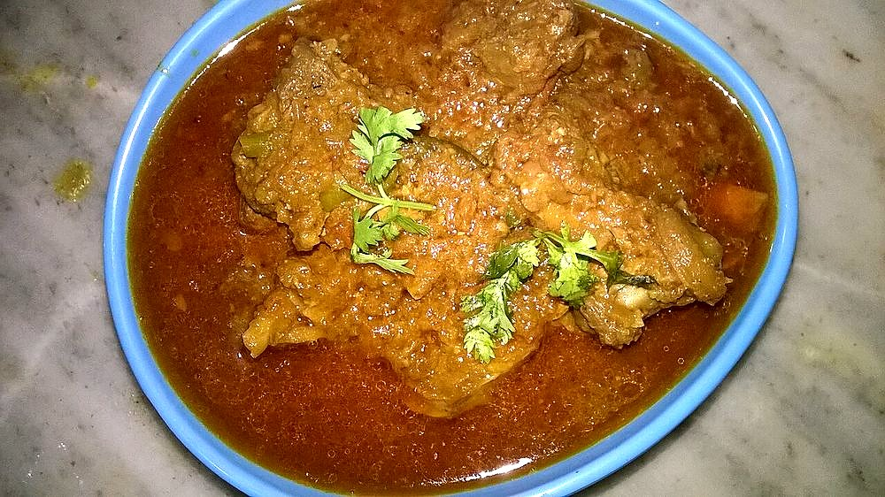

Junglee Maas
a hunter's mutton cooked with almost nothing but ghee, whole red chillies and salt

Contains: milk
Ingredients
Quantities for 4.
- 800g, bone-in shoulder and rib pieces Mutton
- 180g Gheethis much is not a mistake; it is the cooking medium and the sauce
- 14 whole, stems snapped, seeds shaken out Dried Red ChilliMathania chillies for colour without brutal heat
- 12 cloves, lightly crushed Garlic
- 1.5 tsp, or to taste Salt
- 300ml Water
Cookware
stovetop
Checked against the ingredient list for ten allergens: milk, egg, fish, crustaceans, tree nuts, peanuts, sesame, mustard, soy and gluten. Brands vary, so read the label on anything new to you.
Before you start
- Take the mutton out of the fridge 30 minutes ahead so it browns instead of stewing.
- Shake the seeds out of the chillies. Fourteen chillies with seeds in is inedible; without, it is deep and warm.
- This dish was cooked in hunting camps with whatever was carried on the horse: meat, ghee, chilli, salt. Resist adding onion, tomato or garam masala. The point is what is missing.
Method
- Warm the ghee in a heavy pot over medium heat and add the whole red chillies. Fry 40 seconds until they swell and darken, then lift them out and set aside.Chillies go from fragrant to acrid in seconds. Get them out early; they go back in later.
- Add the crushed garlic to the ghee and fry 1 minute until it is pale gold and perfumed.
- Raise the heat, add the mutton in a single layer and let it sit undisturbed 4 minutes before turning. Brown all over, about 12 minutes total.Crowding the pot steams the meat grey. Brown in two batches if your pot is small.
- Return the chillies to the pot with the salt and turn everything over the heat for 3 minutes so the ghee takes on the chilli colour.
- Add 300ml water, bring to a boil, then cover and drop to the barest simmer.
- Cook 55-65 minutes, turning the meat every 15 minutes, until it pulls away from the bone under a fork.A trembling surface, never a boil. Boiled mutton goes stringy and no amount of extra time fixes it.
- Uncover, raise the heat and cook off the remaining liquid, stirring, until the ghee separates out clear and red and clings to the meat, about 8 minutes.
- Rest 10 minutes off the heat, then tilt the pot and spoon off any ghee you do not want. Serve with bajre ki roti.
Safe temperatures: Whole cuts of mutton, beef and pork are done at 63°C / 145°F, rested 3 minutes. A long braise passes that well before the meat is tender. Reheat leftovers to 74°C / 165°F. FoodSafety.gov
Storage
Better on the second day. Keeps 3 days refrigerated under its layer of set ghee, which seals it. Reheat gently on the stove; freezes well for 2 months.
Nutrition Medium estimate
High protein: 42 g a serving, 27% of the calories
| Per serving312 g | Per 100 g | |
|---|---|---|
| Calories | 626 kcal | 201 kcal |
| Protein | 41.9 g | 13 g |
| Carbohydrate | 3.0 g | 1 g |
| of which sugars | 0.1 g | 0 g |
| Fibre | 0.2 g | 0 g |
| Fat | 49.4 g | 16 g |
| of which saturated | 29.3 g | 9 g |
| of which unsaturated | 17.0 g | 5 g |
Ingredients given to taste count as zero, so the real figures run a little higher. Nearest database match used for mutton. Estimated from raw ingredients using USDA FoodData Central.
More like this: Gluten-free Indian recipes · Rajasthani recipes
Times, yields, allergens and nutrition are guidance. Use your own judgement on doneness and on storing. More in About.